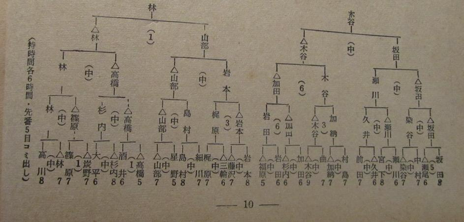

| 1st Tokyo Shinbun Cup | |||||
|---|---|---|---|---|---|
| Sakata Eio | Sakata Eio | Sakata Eio | Sakata Eio | Kitani Minoru B+R 1957-01-06 |
Kitani Minoru B+R 1957-01-10 W+6 1957 |
| Seo Hisashi | |||||
| Nakamura Yutaro | Sometani Kazuo | ||||
| Sometani Kazuo | |||||
| Segawa Yoshio | Segawa Yoshio | Segawa Yoshio | |||
| Miyashita Shuyo | |||||
| Hisai Keishi | Hisai Keishi | ||||
| Maeda Nobuaki | |||||
| Murashima Yoshinori | Kano Yoshinori | Kitani Minoru B+3 1956 |
Kitani Minoru W+6 1957 |
||
| Kano Yoshinori | |||||
| Magari Reiki | Kitani Minoru W+0, B+R 1956, 1956 |
||||
| Kitani Minoru | |||||
| Kada Katsuji | Kada Katsuji | Kada Katsuji | |||
| Sugiuchi Kazuko | |||||
| Iwata Tatsuaki | Iwata Tatsuaki | ||||
| Fukuhara Yoshitora | |||||
| Iwamoto Kaoru | Iwamoto Kaoru W+R 1956 |
Iwamoto Kaoru | Yamabe Toshiro | Hayashi Yutaro | |
| Fujisawa Shuko | |||||
| Miwa Yoshiro | Kajiwara Takeo | ||||
| Kajiwara Takeo | |||||
| Hosokawa Senjin | Shimamura Toshihiro | Yamabe Toshiro | |||
| Shimamura Toshihiro | |||||
| Hoshino Toshi | Yamabe Toshiro | ||||
| Yamabe Toshiro | |||||
| Takahashi Toshimitsu | Takahashi Toshimitsu | Takahashi Toshimitsu | Hayashi Yutaro | ||
| Sakai Michiharu | |||||
| Sugiuchi Masao | Sugiuchi Masao | ||||
| Ohira Shuzo | |||||
| Sumino Takeshi | Shinohara Masami | Hayashi Yutaro | |||
| Shinohara Masami | |||||
| Hayashi Yutaro | Hayashi Yutaro B+R 1956-03-14 |
||||
| Takagawa Shukaku | |||||